양으로 감각을 만들고, 데이터로 다듬어요
화자는 비즈니스의 본질을 딱 두 가지로 봐요. 제대로 만들고, 그걸 제대로 파는 거예요. 둘 다 잘하려면 먼저 양을 미친 듯이 쌓아야 한다고 해요.
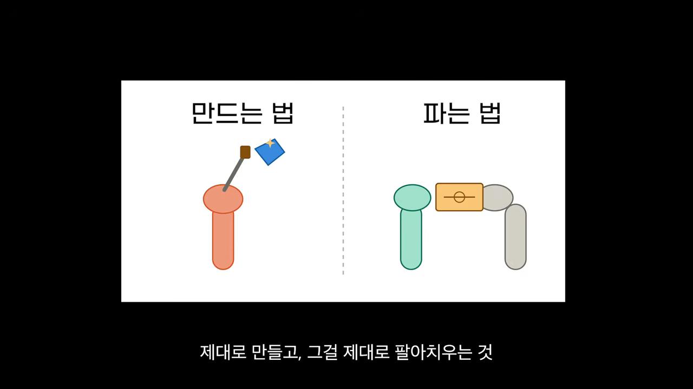
많이 그린 팀이 더 잘 그렸어요
근거로 드는 건 창작자의 심리를 다룬 책에 나오는 미술 수업 이야기예요. A팀은 학기 동안 그린 그림 수로만 점수를 받고, B팀은 완벽한 작품 한 점으로만 점수를 받았어요. 결과는 반대였어요. 흠잡을 데 없는 작품은 질을 따지던 B팀이 아니라 많이 그린 A팀에서 쏟아졌어요.
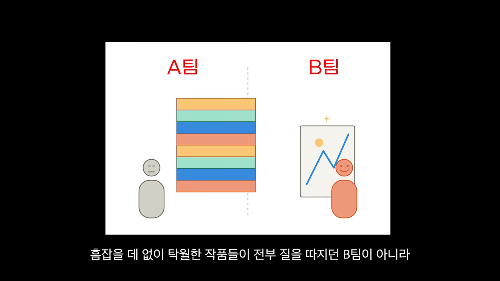
화자 자신의 경험도 같았어요. 작년부터 매주 한 편씩 영상을 올렸더니 썸네일과 제목, 대본 흐름을 짜는 감각이 몸에 붙었대요. 조회수가 크게 터져서 실제 매출로 이어진 영상도 나왔어요.
양만으로는 제자리걸음을 해요
그런데 매주 수량을 채우는 데 급하다 보니 어느 순간부터 발전이 없다고 느꼈대요. 실행량은 감각을 키워 주지만, 감각만으로는 사업을 키울 수 없어요. 숫자를 분석하고 그 결과로 전략을 계속 고쳐야 해요.
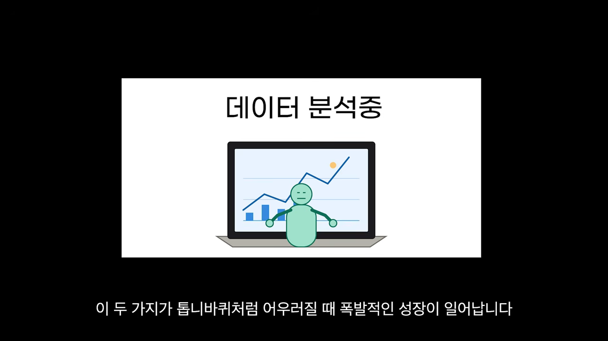
화자는 이걸 수영 배우기에 빗대요. 둘을 나란히 놓으면 이래요.
| 단계 | 수영에서는 | 사업에서는 |
|---|---|---|
| 처음 | 일단 물에 많이 들어가 봐야 떠요 | 일정 궤도에 오를 때까지 실행량을 쏟아부어요 |
| 그다음 | 선수는 영법 자세를 교정하고 근력 운동을 따로 해요 | 흐름이 몸에 익으면 데이터를 기준으로 방향을 미세 조정해요 |
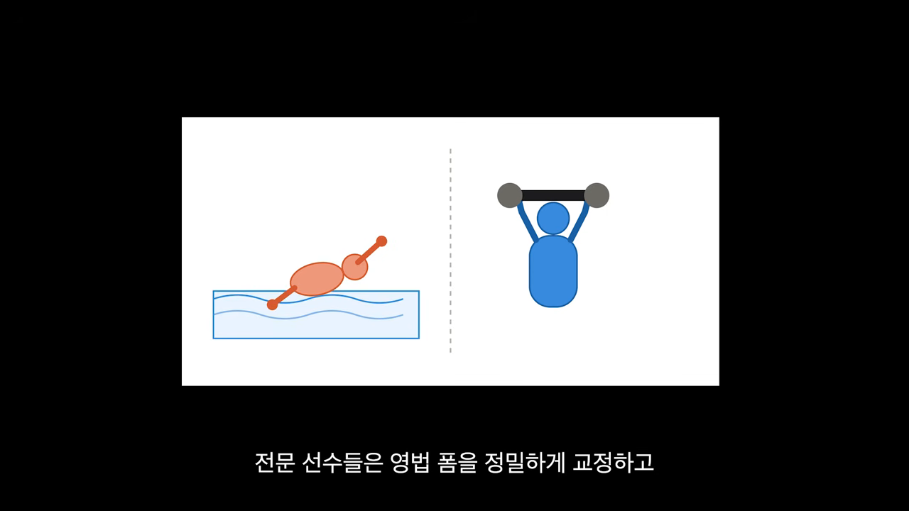
매출은 가장 약한 고리에서 끊겨요
혼자 사업을 시작하면 할 일이 대략 100개쯤 쏟아져요. 영상 제작, 썸네일 디자인, 대본 작성, 상품 업그레이드까지요. 그런데 실제로 통장에 돈을 넣어 주는 건 그중 딱 몇 가지 핵심 과제일 가능성이 커요. 그래서 다음 이야기는 사업에서 막힌 곳, 즉 병목을 찾는 법이에요.
사업은 사슬처럼 이어져 있어요
사람들이 내 영상을 보고, 그중 일부가 채널 팬이 되고, 또 그중 일부가 지갑을 열어요. 마지막으로 그 일부가 오래 남는 단골이 돼요. 이 고리 중 한 곳만 약해도 사슬은 거기서 끊어져요. 약한 고리는 그대로 두고 멀쩡한 고리만 튼튼하게 만들어 봤자 소용없어요.
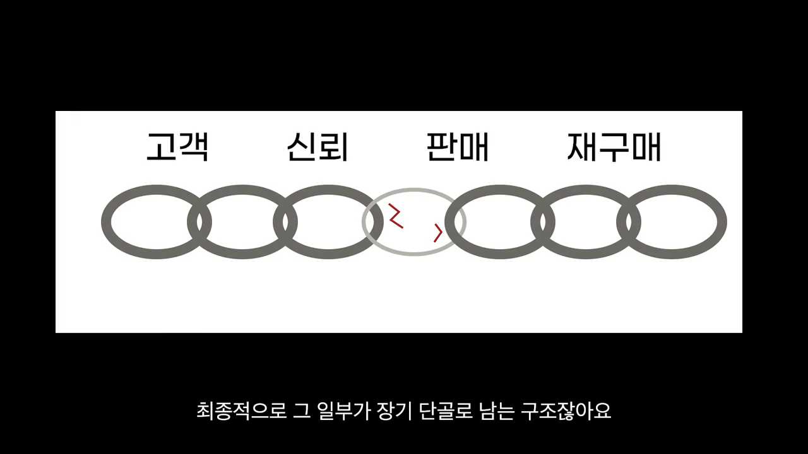
고리가 끊긴다는 건 그 구간의 숫자가 0이 된다는 뜻이에요. 매출은 가격 × 수량이라서, 한 구간이 0이면 매출도 0이에요.
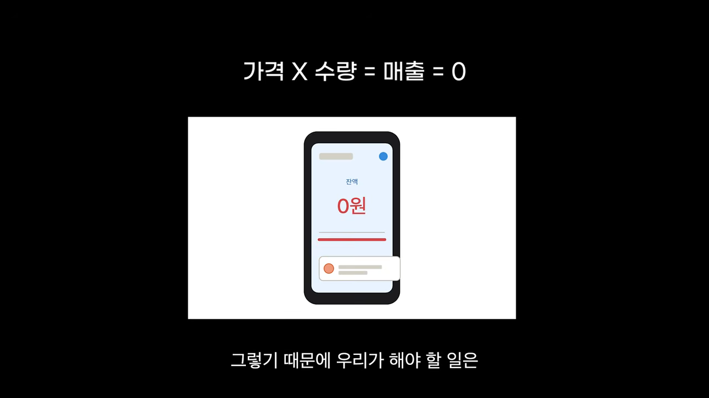
그래서 해야 할 일은 아무 데나 힘을 쏟는 게 아니에요. 가장 취약한 지점을 정확히 찾아서 그 부분만 집중해서 보강하는 거예요.
측정해야 고칠 수 있어요
그 지점을 찾는 방법으로 화자는 피터 드러커의 말이라며 이 문장을 꺼내요.
측정할 수 없는 것은 개선할 수도 없다.
— 영상 03:21
감이나 직관만으로는 어디가 막혔고 어디가 잘 돌아가는지 객관적으로 가늠할 수 없어요. 숫자와 지표를 먼저 모아야 고칠 곳이 보여요.
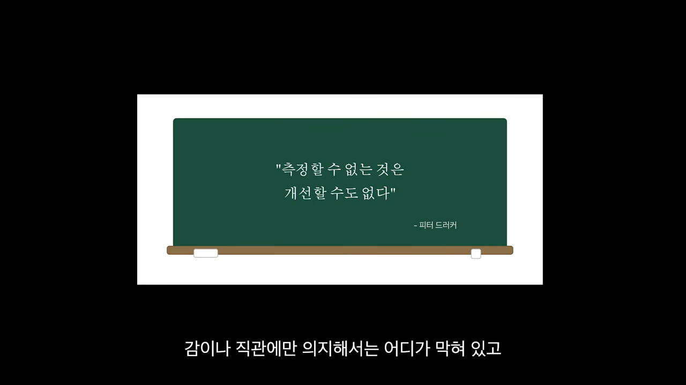
퍼널로 막힌 구간을 찾아요
상품이 통 안 팔린다면 어느 단계에서 흐름이 막혔는지부터 찾아야 해요. 손님이 나를 처음 알게 된 순간부터 결제 버튼을 누르기까지의 동선을 샅샅이 들여다보는 거예요. 이 동선을 단계별로 그린 게 퍼널이에요.
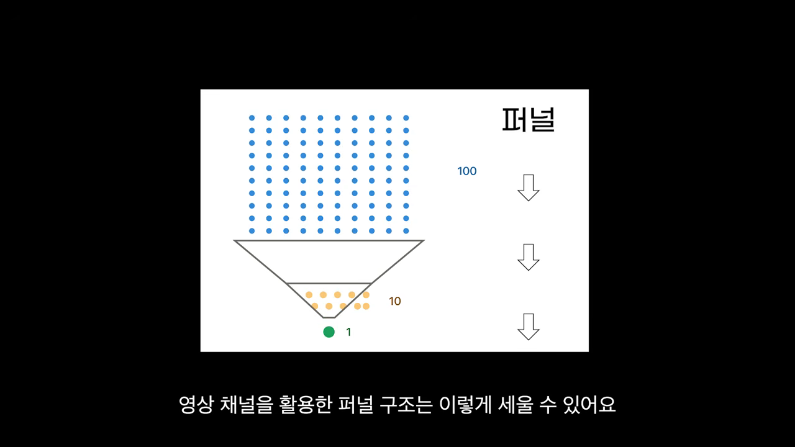
유튜브로 파는 1인 사업의 퍼널
영상 채널을 쓰는 사업이라면 퍼널은 '영상 클릭 → 영상 시청 → 판매 페이지 방문 → 구매' 순서예요. 손님이 어느 길목에서 이탈하는지 추적하고, 막힌 구간을 하나씩 뚫으면 돼요. 화자가 말한 진단표를 정리하면 이래요.
| 막힌 곳 | 고칠 것 | 볼 숫자 |
|---|---|---|
| 영상을 안 눌러요 | 썸네일과 제목 | 클릭률 (유튜브 스튜디오) |
| 켜자마자 꺼요 | 영상 도입부 | 시청 지속 시간 (유튜브 스튜디오) |
| 판매 페이지로 안 넘어가요 | 영상의 대본 구조와 멘트 | 랜딩 페이지 방문율 (구글 애널리틱스) |
| 페이지에 와서 안 사요 | 랜딩 페이지 구성과 카피 | 구매 전환율 (방문자 대비 판매 수) |
| 샀는데 다시 안 사요 | 상품 품질 자체 | 재구매 |
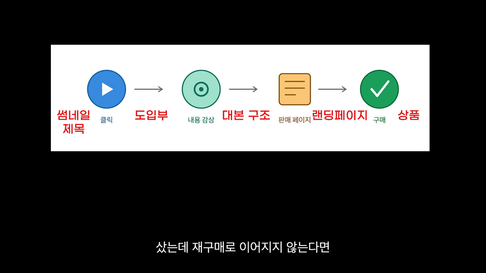
어떤 도구로 숫자를 보나요
영상의 클릭률과 시청 지속 시간은 유튜브가 주는 데이터(유튜브 스튜디오)로 봐요. 랜딩 페이지 방문율은 구글 애널리틱스로 보면 돼요. 구매 전환율은 페이지에 들어온 사람 대비 몇 명이 샀는지 계산하면 돼요.
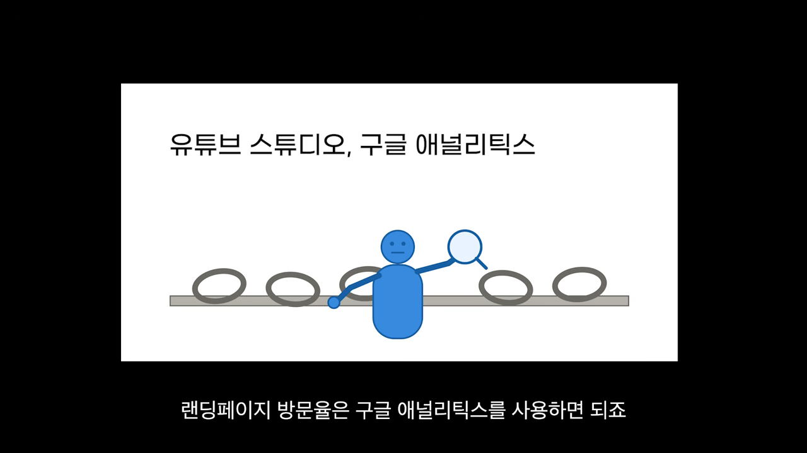
정리하면, 문제가 터졌을 때 큰 덩어리를 잘게 쪼개서 하나씩 들여다보는 거예요. 그리고 결과가 나올 때까지 이 과정을 계속 반복하면 돼요.
AI가 따라 할 수 없는 건 개인 브랜드예요
마지막 이야기는 시대 변화예요. 누구나 쉽게 배울 수 있는 일을 하고 있다면, 시장에서 가장 싼값으로 빠르게 밀려난다고 화자는 말해요. 이유는 두 가지예요. AI가 사람의 일을 빠르게 가져가고 있고, 인터넷 덕분에 온갖 노하우가 다 공개돼 있어요. 그래서 시중 제품과 서비스의 완성도가 거의 비슷해졌어요.
비슷해질수록 '나'가 차별점이에요
그래서 나라는 사람을 기억하게 만드는 개인 브랜딩이 어느 때보다 중요해졌대요.
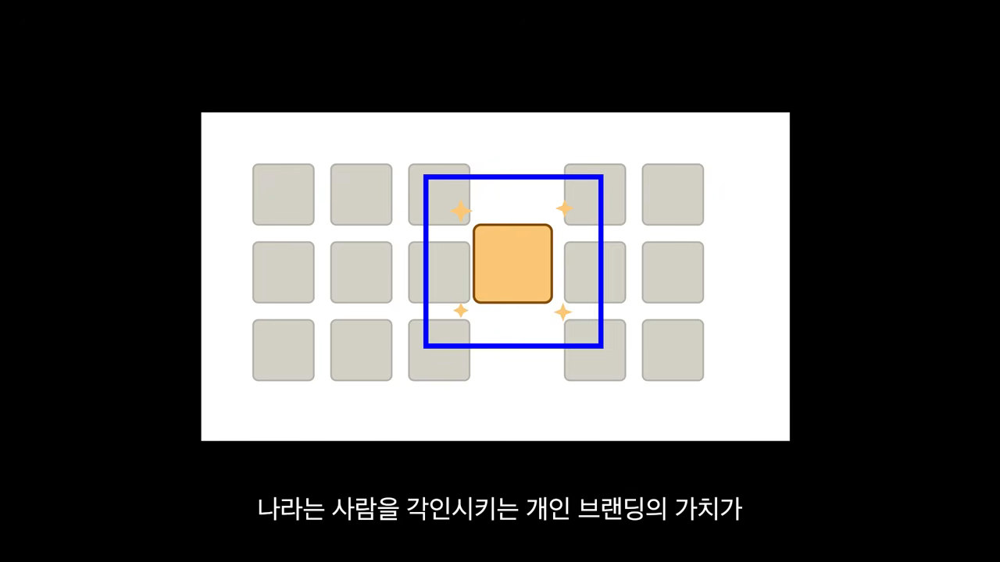
AI는 정해진 지침과 규칙은 완벽하게 베낄 수 있어요. 하지만 나만의 독창적인 이야기와 고유한 가치관까지 복제하지는 못해요. 모든 정보가 공개된 세상에서는 내 브랜드 이야기가 내 상품을 돋보이게 하는 차별화 카드가 돼요.
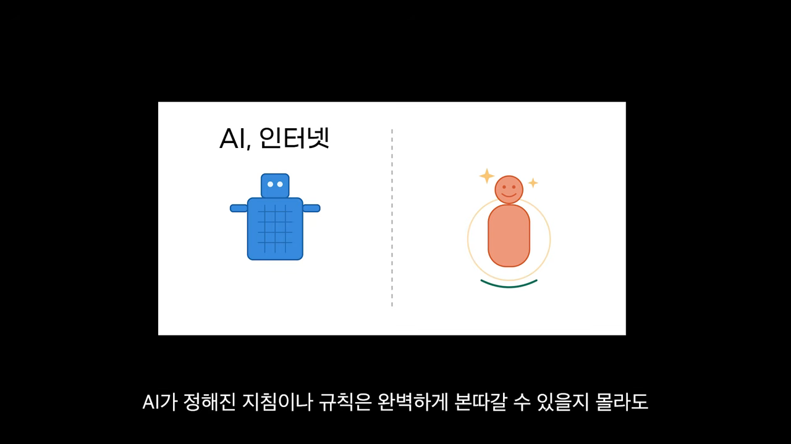
도구는 이미 있어요
반복적이고 단순한 일은 점점 설 자리를 잃고 있어요. 많은 사람이 이걸 느끼지만, 정작 AI나 미디어 같은 지렛대를 제대로 쓰는 사람은 드물다고 화자는 봐요. 개인 브랜드를 세우기에 이보다 좋은 환경이 없는데도요. 특히 유튜브에서는 쓰는 사람과 안 쓰는 사람의 차이가 훨씬 크게 벌어진대요.
결국 하는 일은 단순해요
화자의 결론은 이래요. 정밀한 데이터로 어디서 병목이 생겼는지 찾고, 새로운 시도를 계속 던지면서 전체 실행량을 늘려요. 벽에 막혀 답답할 때는 이미 잘되는 비즈니스 모델을 깊이 관찰하고 벤치마킹하면 돼요.
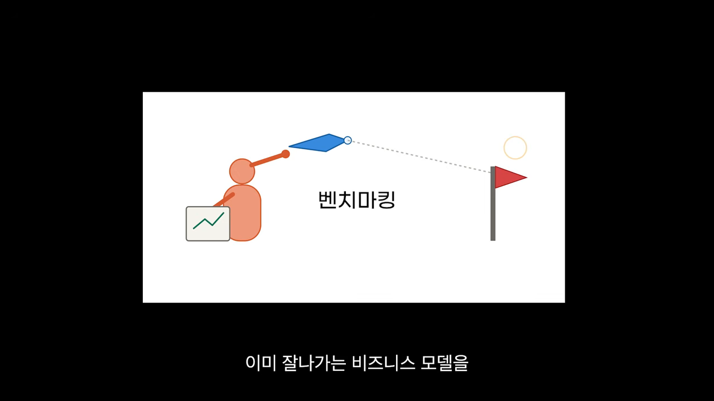
길은 이미 열려 있어요. 활용하는 사람만 잡을 수 있어요.
— 영상 06:41